에너지관리기사 (2014-05-25 기출문제)
1과목: 연소공학
1. H2 50%, CO 50%인 기체연료의 연소에 필요한 이론공기량 (Sm3/Sm3)은 얼마인가?(오류 신고가 접수된 문제입니다. 반드시 정답과 해설을 확인하시기 바랍니다.)
- 0.50
- 1.00
- 2.38
- 3.30
(정답률: 65%)

2. 석탄을 분석하니 다음과 같았다면 연료비는 약 얼마인가?
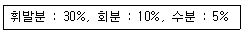
- 1.4
- 1.6
- 1.8
- 2.0
(정답률: 58%)
3. 물 500L를 10℃에서 60℃로 1시간 가열하는데 발열량이 50.232 MJ/kg인 가스를 사용할 때 가스는 몇 kg/h가 필요한가? (단, 연소효율은 75%이다.)
- 2.61
- 2.78
- 2.91
- 3.07
(정답률: 58%)
4. 연소과정에 대한 설명으로 틀린 것은?
- 무연탄은 주로 증발연소를 한다.
- 석탄, 목재 같은 연료가 연소 초기에 화염을 내면서 연소하는 과정을 분해연소라 한다.
- 표면연소는 연소반응이 고체 표면에서 일어난다.
- 연소속도는 산화반응 속도라고도 할 수 있다.
(정답률: 67%)
5. 로터리 버너를 사용하였더니 로벽에 카본이 붙었다. 그 주원인은?
- 연소실 온도가 너무 높다.
- 공기비가 너무 크다.
- 화염이 닿는 곳이 있다.
- 중유의 예열온도가 높다.
(정답률: 83%)
6. 프로판(C3H8) 및 부탄(C4H10)이 혼합된 LPG를 건조공기로 연소시킨 가스를 분석하였더니 CO2 11.32%, O2 3.76%, N2 84.92%의 조성을 얻었다. LPG 중의 프로판의 부피는 부탄의 약 몇 배인가?
- 8배
- 11배
- 15배
- 20배
(정답률: 58%)
7. CH4 1 Sm3를 완전연소시키는데 필요한 공기량은?
- 9.52 Sm3
- 11.5 Sm3
- 13.5 Sm3
- 15.52 Sm3
(정답률: 60%)
8. 링겔만 농도표는 어떤 목적으로 사용하는가?
- 연돌에서 배출되는 매연농도 측정
- 보일러수의 pH 측정
- 연소가스 중의 탄산가스 농도 측정
- 연소가스 중의 COx 농도 측정
(정답률: 82%)
9. 대기오염 방지를 위한 집진장치 중 습식집진장치에 해당 하지 않는 것은?
- 백필터
- 충전탑
- 벤츄리 스크러버
- 사이클론 스크러버
(정답률: 78%)
10. 800K의 고열원과 400K의 절열원 사이에서 작동하는 카르노사이클에 공급하는 열량이 사이클 당 400kJ이라 할 때 1사이클 당 외부에 하는 일은 몇 kJ인가?
- 150
- 200
- 250
- 300
(정답률: 68%)
11. 다음 중 역화의 원인이 아닌 것은?
- 통풍이 불량할 때
- 기름이 과열되었을 때
- 기름에 수분, 공기 등이 혼입되었을 때
- 버너타일이 과열되었을 때
(정답률: 66%)
12. 액체연료의 연소방법으로 틀린 것은?
- 유동층연소
- 등심연소
- 분무연소
- 증발연소
(정답률: 73%)
13. 매연 생성에 가장 큰 영향을 미치는 것은?
- 연소속도
- 발열량
- 공기비
- 착화온도
(정답률: 84%)
14. 다음 연소범위에 대한 설명 중 틀린 것은?
- 연소 가능한 상한치와 하한치의 값을 가지고 있다.
- 연소에 필요한 혼합 가스의 농도를 말한다.
- 연소 범위가 좁으면 좁을수록 위험하다.
- 연소 범위의 하한치가 낮을수록 위험도는 크다.
(정답률: 84%)
15. 액체연료의 미립화 시 평균 분무입경에 직접적인 영향을 미치는 것이 아닌 것은?
- 액체연료의 표면장력
- 액체연료의 점성계수
- 액체연료의 탁도
- 액체연료의 밀도
(정답률: 83%)
16. 부탄의 연소반응에 대한 설명으로 틀린 것은?
- 부탄 1kg을 연소시키기 위해서는 2.51Sm3의 산소가 필요하다.
- 부탄을 완전 연소시키기 위해서는 질량으로 6.5배의 산소가 필요하다.
- 부탄 1m3을 연소시키면 4m3의 탄산가스가 발생한다.
- 부탄과 산소의 질량의 합은 탄산가스와 수증기의 질량의 합과 같다.
(정답률: 69%)
17. 증기운폭발의 특징에 대한 설명으로 틀린 것은?
- 폭발보다 화재가 많다.
- 연소에너지의 약 20% 만 폭풍파로 변한다.
- 증기운의 크기가 클수록 점화될 가능성이 커진다.
- 점화위치가 방출점에서 가까울수록 폭발위력이 크다.
(정답률: 83%)
18. 어느 용기에서 압력(P)과 체적(V)의 관계는 P=(50V+10)×102kPa과 같을 때 체적이 2m3에서 4m3로 변하는 경우 일량은 몇 MJ인가? (단, 체적의 단위는 m3이다.)
- 32
- 34
- 36
- 38
(정답률: 40%)
19. 포화탄화수소계의 기체 연료에서 탄소 원자수(C1~C4)가 증가할 때에 대한 설명으로 옳은 것은?
- 연료 중의 수소분이 증가한다.
- 연소범위가 넓어진다.
- 발열량(J/m3)이 감소한다.
- 발화온도가 낮아진다.
(정답률: 43%)
20. 중량비로 C(86%), H(14%)의 조성을 갖는 액체 연료를 매 시간당 100kg 연소시켰을 때 생성되는 연소가스의 조성이 체적비로 CO2(12.5%), O2(3.7%), N2(83.8%)일 때 1시간당 필요한 연소용 공기량(Sm3)은?
- 11.4
- 1140
- 13.7
- 1370
(정답률: 32%)
2과목: 열역학
21. 압력 500kPa, 온도 250℃의 과열증기 500kg에 동일 압력의 주입수량 x kg의 포화수를 주입하여 동일압력의 건도 93%의 습공기를 얻었을 때, 주입량 x는 약 얼마인가? (단, 압력 500kPa, 온도 250℃의 과열증기 엔탈피는 3347kJ/kg, 동일압력에서 포화수의 엔탈피는 758kJ/kg이며, 이 때 증발잠열은 2108kJ/kg이다.)
- 80.6
- 160.1
- 230.7
- 268.7
(정답률: 41%)
22. 다음 중 열역학 제2법칙이 표현이 될 수 없는 내용은?
- 진공 중에서의 가스의 확산은 비가역적이다.
- 제2종 영구기관은 존재할 수 없다.
- 사이클에 의하여 일을 발생시킨 때는 고온체만 필요하다.
- 열은 외부 동력없이 저온체에서 고온체로 이동할 수 없다.
(정답률: 64%)
23. 온도 0℃에서 공기의 음속은 몇 m/s인가? (단, 공기의 기체상수는 0.287kJ/kgㆍK이고 비열비는 1.4이다.)
- 312
- 331
- 348
- 352
(정답률: 53%)
24. 밀폐 시스템내의 이상기체에 대하여 단위 질량당 일(w)이 다음과 같은 식으로 표시될 때 이 식은 어떤 과정에 대하여 적용할 수 있는가? (단, R은 기체상수, T는 온더, V는 체적이다.)
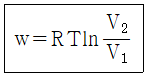
- 단열과정
- 등압과정
- 등온과정
- 등적과정
(정답률: 64%)
25. 이상기체에 대한 가역 단열과정에서 온도(T), 압력(P), 부피(V)의 관계를 표시한 것으로 옳은 것은? (단, γ는 비열비이다.)(오류 신고가 접수된 문제입니다. 반드시 정답과 해설을 확인하시기 바랍니다.)
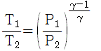
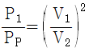
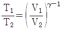
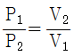
(정답률: 60%)
26. 공기를 작동유체로 하는 Diesel cycle의 온도범위가 32℃~3200℃이고 이 cycle의 최고압력 6.5MPa, 최초 압력 160kPa일 경우 열효율은? (단, 비열비는 1.4이다.)
- 14.1%
- 39.5%
- 50.9%
- 87.8%
(정답률: 37%)
27. 건포화증기의 건도는 얼마인가?
- 0
- 0.5
- 0.7
- 1.0
(정답률: 68%)
28. 그림과 같은 냉동기의 성능계수(COP)는 어떻게 나타낼 수 있는가?
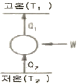
- W/Q1
- Q2/W
- (T1-T2)/T2
- T1/(T2-T1)
(정답률: 69%)
29. 이상기체로 구성된 밀폐계의 과정을 표시한 것으로 틀린 것은? (단, Q는 열량, H는 엔탈피, W는 일, U는 내부에너지이다.)
- 등온과정에서 Q=W
- 단열과정에서 Q=-W
- 정압과정에서 Q=△H
- 정적과정에서 Q=△U
(정답률: 59%)
30. Rankine 사이클의 이론 열효율을 향상시키는 방안으로 볼 수 없는 것은?
- 보일러 압력을 낮춘다.
- 증기를 고온으로 과열시킨다.
- 응축기 압력을 낮춘다.
- 응축기 온도를 낮춘다.
(정답률: 60%)
31. 등온 압축계수 K를 옳게 표시한 것은?
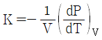
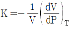
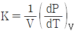
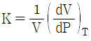
(정답률: 51%)
32. 열역학 제2법칙과 관계가 가장 먼 것은?
- 열은 온도가 높은 곳에서 낮은 곳으로 흐른다.
- 전열선에 전기를 가하면 열이 나지만 전열선을 가열하여도 전역을 얻을 수 없다.
- 열기관의 효율에 대한 이론적인 한계를 결정한다.
- 전체 에너지양은 항상 보존된다.
(정답률: 76%)
33. 다음 중 수증기를 사용하는 발전소의 열역학 사이클과 가장 관계 깊은 것은?
- 랭킨 사이클
- 오토 사이클
- 디젤 사이클
- 브레이턴 사이클
(정답률: 74%)
34. 15℃ 물로부터 0℃의 얼음을 시간당 40kg 만드는 냉동기의 냉동톤은 약 얼마인가? (단, 얼음의 융해열은 80kcal/kg이고, 1냉동톤은 3320kcal/h로 한다.
- 0.14
- 1.14
- 2.14
- 3.14
(정답률: 60%)
35. 매시간 2000kg의 포화수증기를 발생하는 보일러가 있다. 보일러내의 압력은 200kPa이고, 이 보일러에는 매시간 15kg의 연료가 공급된다. 이 보일러의 효율은 약 얼마인가? (단, 보일러에 공급되는 물의 엔탈피는 84kJ/kg이고, 200kPa에서의 포화증기의 엔탈피는 2700kJ/kg이며, 연료의 발열량은 42000kJ/kg이다.)(오류 신고가 접수된 문제입니다. 반드시 정답과 해설을 확인하시기 바랍니다.)
- 77%
- 80%
- 83%
- 86%
(정답률: 49%)
36. 카르노사이클의 과정에 해당하는 것은?
- 등온과정과 등압과정
- 등온과정과 단열과정
- 등압과정과 단열과정
- 등적과정과 단열과정
(정답률: 73%)
37. 순수물질로 된 밀폐계가 가역단열 과정 동안 수행한 일의 양에 대한 설명으로 옳은 것은?
- 엔탈피의 변화량과 같다.
- 내부에너지의 변화량과 같다.
- 0이다.
- 정압과정에서의 일과 같다.
(정답률: 63%)
38. 압력 P1, 온도 T1인 이상기체를 압력 P2까지 단열압축하였다. 이 때 나중 온도 T2에 대하여 다음의 식으로 계산할 수 있는 경우는? (단, γ는 비열비 이다.)
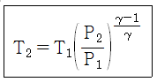
- 가역 단열압축이고 γ는 일정
- 비가역 단열압축이고 γ는 온도에 따라 변화
- 가역 단열압축이고 γ는 온도에 따라 변화
- 비가역 단열압축이고 γ는 일정
(정답률: 50%)
39. 다음 중 교축(throtting)과정을 통하여 일반적으로 변화하지 않는 물성치는?
- 온도
- 압력
- 엔탈피
- 엔트로피
(정답률: 80%)
40. 다음 중 표준(이상)사이클에서 동일 냉동 능력에 대한 냉매순환(kg/h)이 가장 작은 것은?
- NH3
- R - 12
- R - 22
- R - 113
(정답률: 69%)
3과목: 계측방법
41. 유량 측정기기 중 유체가 흐르는 단면적이 변함으로서 직접 유체의 유량을 읽을 수 있는 기기, 즉 압력차를 측정할 필요가 없는 장치는?
- 오리피스 미터
- 벤투리 미터
- 로터 미터
- 피토 튜브
(정답률: 72%)
42. 서미스터(thermistor)저항체 온도계의 특성에 대한 설명으로 옳은 것은?
- 재현성이 좋다.
- 응답이 느리다.
- 저항온도계수가 부특성이다.
- 저항온도계수는 섭씨온도의 제곱에 비례한다.
(정답률: 54%)
43. 다음 연소가스 중 미연소가스계로 측정 가능한 것은?
- CO
- CO2
- NH3
- CH4
(정답률: 75%)
44. 열전대 보호관 중 최고사용온도가 가장 낮은 것은?
- 황동관
- 연강관
- 자기관
- 석영관
(정답률: 61%)
45. 화씨(°F)와 섭씨(℃)의 눈금이 같게 되는 온도는 몇 ℃ 인가?
- 40
- 20
- -20
- -40
(정답률: 78%)
46. 명판에 Ni450이라 쓰여 있는 측온저항체의 100℃의 점에서의 저항값은 얼마인가? (단, Ni의 저항온도계수는 +0.0067이다.)
- 752mΩ
- 752Ω
- 301mΩ
- 301Ω
(정답률: 51%)
47. 다음 중 압력식 온도계가 아닌 것은?
- 액체팽창식 온도계
- 열전 온도계
- 중기압식 온도계
- 가스압력식 온도계
(정답률: 76%)
48. 조절계의 동작에는 연속, 불연속 동작을 이용한다. 다음 중 불연속 동작을 이용하는 것은?
- ON-OFF 동작
- 비례동작
- 적분동작
- 미분동작
(정답률: 80%)
49. 금속의 전기 저항 값이 변화되는 것을 이용하여 압력을 측정하는 전기저항압력계의 특성으로 맞는 것은?
- 응답속도가 빠르고 초고압에서 미압까지 측정한다.
- 구조가 간단하여 압력검출용으로 사용한다.
- 먼지의 영향이 적고 변동에 대한 적응성이 적다.
- 가스폭발 등 급속한 압력변화를 측정하는데 사용한다.
(정답률: 66%)
50. 중력단위계에서 무리량을 차원으로 표시한 것으로 틀린 것은?
- 질량 : M
- 중량 : F
- 길이 : L
- 시간 : T
(정답률: 76%)
51. 액주식 압력계에 사용되는 액체의 특징이 아닌 것은?
- 점성이 적을 것
- 팽창계수가 클 것
- 모세관현상이 적을 것
- 일정한 화학성분을 가질 것
(정답률: 73%)
52. 전기저항 온도계의 측온 저항체의 공칭 저항치라고 하는 것은 온도 몇 ℃일 때의 저항소지의 저항을 말하는가?
- 20℃
- 15℃
- 10℃
- 0℃
(정답률: 69%)
53. 관유동에서 층류와 난류를 판정할 때 레이놀즈수를 사용한다. 층류와 난류의 기준이 되는 임계 레이놀즈수는 약 얼마인가?
- 23
- 232
- 2320
- 23200
(정답률: 77%)
54. 다음 가스분석계 중 산소를 분석할 수 없는 것은?
- 연소식
- 자기식
- 적외선식
- 지르코니아식
(정답률: 55%)
55. 고온의 로(爐) 온도측정에 사용되는 것이 아닌 것은?
- seger cones
- 백금저항온도계
- 방사온도계
- 광고온계
(정답률: 65%)
56. 다음 중 미압 측정용으로 가장 적절한 압력계는?
- 부르동관식 압력계
- 경사관식 압력계
- 분동식 압력계
- 잔기식 압력계
(정답률: 75%)
57. 국제적인 실용온도 눈금 중 평형수소의 3중점은 얼마인가?
- 0 K
- 13.81 K
- 54.36K
- 273.16K
(정답률: 64%)
58. 다음 보기에서 설명하는 제어동작은?
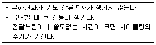
- PD 동작
- PID 동작
- PI 동작
- P 동작
(정답률: 73%)
59. 어떤 관속을 흐르는 유체의 한 점에서의 속도를 측정하고자 할 때 가장 적당한 유속 측정 장치는?
- orifice meter
- pitot tube
- rotameter
- venturimeter
(정답률: 69%)
60. 제어계의 각부에 전달되는 모든 신호가 시간의 연속함수인 귀환 제어계는?
- Sample값 제어계
- relay형 제어계
- 개회로 제어계
- 연속 데이터 제어계
(정답률: 71%)
4과목: 열설비재료 및 관계법규
61. 다음 보온재 중 저온용이 아닌 것은?
- 우모펠트
- 염화비닐
- 폴리우레탄 폼
- 세라믹 화이버
(정답률: 78%)
62. 에너지다소비사업자에게 에너지손실요인의 개선명령을 할 수 있는 자는?
- 산업통상자원부장관
- 시, 도지사
- 에너지관리공단이사장
- 에너지관리진단기관협회장
(정답률: 68%)
63. 공업용 로에 있어서 폐열회수장치로 가장 적합한 것은?
- 댐퍼
- 백필터
- 바이패스 연도
- 레큐퍼레이터
(정답률: 81%)
64. 매끈한 원관 속을 흐르는 유체의 레이놀즈수(Re)가 1800일 때의 관마찰계수(f)는?
- 0.013
- 0.15
- 0.036
- 0.⑤3
(정답률: 56%)
65. 납석벽돌의 특성에 대한 설명으로 틀린 것은?
- 비교적 저온에서의 소결이 용이하다.
- 흡수율이 작고 압축강도가 크다.
- 내식성이 우수하다.
- 내화도는 SK 34이상이다.
(정답률: 69%)
66. 에너지원별 에너지열량환산기준으로 총발열량(kcal)이 가장 높은 연료는? (단, 1L 또는 1kg 기준이다.)
- 휘발유
- 항공유
- B-C유
- 천연가스
(정답률: 83%)
67. 가스배관의 관경이 13mm 이상, 33mm 미만일 때의 관의 고정장치 설치간격으로 옳은 것은?
- 1m 마다
- 2m 마다
- 3m 마다
- 4m 마다
(정답률: 67%)
68. 국가에너지절약 추진위원회의 위원에 해당되지 않는 자는?
- 한국전력공사사장
- 국무조정실 국무2차장
- 고용노동부차관
- 에너지관리공단이사장
(정답률: 76%)
69. 내화도가 높고 용융점까지 하중에 견디기 때문에 각종 가마의 천정에 주로 사용되는 내화물은?
- 규석내화물
- 납석내화물
- 샤모트내화물
- 마그네시아내화물
(정답률: 65%)
70. 산업통상자원부장관이 정한 에너지 이용합리화를 위한 효율관리기자재에 해당되지 않는 것은? (단, 산업통상자원부장관이 따로 고시하는 기자재 및 설비는 제외한다.)
- 전기냉장고
- TV
- 자동차
- 조명기기
(정답률: 59%)
71. 폐열회수 방식에 의한 요의 분류에 해당하는 것은?
- 연속식
- 환열식
- 횜염식
- 반연속식
(정답률: 66%)
72. 내식성, 굴곡성이 우수하고 양도체이며 내압성도 있어서 열교환기용 전열관, 급수관 등 화학공법으로 주로 사용되는 것은?
- 주철관
- 동관
- 강관
- 알루미늄관
(정답률: 79%)
73. 정부가 에너지 이용 합리와를 촉진하기 위하여 지원하는 사업에 해당되지 않는 것은?
- 에너지원의 기술홍보
- 에너지원의 연구개발사업
- 기술용역 및 기술지도사업
- 에너지이용합리화를 위한 에너지기술개발사업
(정답률: 60%)
74. 신ㆍ재생에너지 중 의무공급량이 지정되어 있는 에너지원은?
- 해양에너지
- 지열에너지
- 태양에너지
- 바이오에너지
(정답률: 79%)
75. 다음 중 평균효율관리 기자제에 해당하는 것은?
- 승용자동차
- 가전제품
- 산업용 보일러
- 조명기기
(정답률: 63%)
76. 로 속에 목탄이나 코크스와 침탄촉진제를 이용하여 강의 표면에 탄소를 침입시켜 표면을 경화시키기 위한 로내의 가열 온도는?
- 650~750℃
- 750~850℃
- 850~950℃
- 950~1⑤0℃
(정답률: 62%)
77. 에너지관리공단의 임원에 관한 내용 중 틀린 것은?
- 감사 1명
- 본부장 3명
- 이사장 1명
- 이사장, 부이사장을 제외한 이사 9명 이내(6명 이내의 비상임 이사를 포함한다.)
(정답률: 77%)
78. 인정검사대상기기 조종자교육을 이수한 자가 조종할 수 없는 것은?
- 초고사용압력(MPa)과 내용적(m3)을 곱한 수치가 0.02을 초과하는 1종 압력용기
- 용량이 581킬로오트인 열매체를 가열하는 보일러
- 용량이 700킬로와트의 온수발생 보일러
- 최고사용압력이 1MPa 이하이고 전열면적이 10m2 이하인 증기보일러
(정답률: 72%)
79. 에너지 공급을 제한하고자 할 경우 산업통상자원부장관은 공급제한일 며칠 전에 이를 에너지공급자 및 에너지 사용제한 대상자에게 예고하여야 하는가?:
- 3일
- 7일
- 10일
- 15일
(정답률: 73%)
80. 공업로의 에너지절감 대책으로서 틀린 것은?
- 배열을 재료의 예열로 사용
- 노체 열용량의 증가
- 공연비의 개선
- 단열의 강화
(정답률: 74%)
5과목: 열설비설계
81. 다음 각 보일러의 특징에 대한 설명 중 틀린 것은?
- 입형 보일러는 좁은 장소에도 설치할 수 있다.
- 노통 보일러는 보유수량이 적어 증기발생 소요시간이 짧다.
- 수관 보일러는 구조상 대용량 및 고압용에 적합하다.
- 관류 보일러는 드럼이 없어 초고압보일러에 적합하다.
(정답률: 62%)
82. 지름 5cm의 파이프를 사용하여 매시 4톤의 물을 공급하는 수도관이 있다. 이 수도관에서의 물의 속도는 몇 m/s 인가? (단, 물의 비중은 1이다.)
- 0.12
- 0.28
- 0.56
- 8.1
(정답률: 42%)
83. 일반적인 강관에서 스케줄 넘버(schedule unmber)는 무엇을 의미하는가?
- 파이프의 외경
- 파이프의 두께
- 파이프의 내경 파이프의 단면적
- 파이프의 단면적
(정답률: 64%)
84. 보일러 또는 로의 연도를 흐르는 연소가스는 연도 내면과의 마찰로 압력이 강하한다. 이 압력 강하 p1[mmAq]는 어떻게 표시되는가? (단, L : 연도의 길이(m), p : 연소가스의 밀도(kg/m3), D : 연도 단면형의 수력반경(m), f : 마찰저항계수, U : 연소가스의 유속(m/s), g : 중력가속도(m/s2)이다.
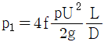
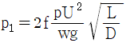
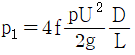
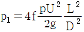
(정답률: 56%)
85. 전기저항로에 발열체 저항이 R[Ω], 여기에 I[A]의 정류에 흘렸을 때 발생하는 이론 열량은 시간당 얼마인가?
- 864 IR[cal]
- 846 IR[cal]
- 864 I2R [cal]
- 846 I2R [cal]
(정답률: 67%)
86. flash tank의 역할을 가자 옳게 설명한 것은?
- 고압응축수로 저압증기를 만든다.
- 저압응축수로 고압증기를 만든다.
- 증기의 건도를 높인다.
- 증기를 저장한다.
(정답률: 65%)
87. 저온부식의 방지 방법이 아닌 것은?
- 과잉공기를 적게 하여 연소한다.
- 발열량이 높은 황분을 사용한다.
- 연료첨가제(수산화마그네슘)을 이용하여 노점온도를 낮춘다.
- 연소 배기가스의 온도가 너무 낮지 않게 한다.
(정답률: 75%)
88. 다음 중 절탄기를 설치하는 장소로서 가장 적합한 곳은?
- 연도
- 과열기 상부
- 가압송풍기 입구
- 연소실
(정답률: 66%)
89. 다음 [그림]과 같이 서로 다른 고체 물질 A, B, C 3개의 평판이 서로 밀착되어 복합체를 이루고 있다. 정상 상태에서의 온도 분포가 [그림]과 같다면 A, B, C 중 어느 물질이 열전도도가 가장 작은가?
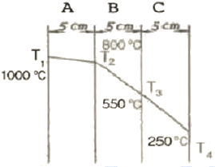
- A
- B
- C
- 모두 같다.
(정답률: 80%)
90. 유체의 동점성계수와 유체온도 전파속도의 비를 표현하는 무차원수는?
- Nusselt(Nu) 수
- Prandtl(Pr) 수
- Grashof(Gr) 수
- Schmidt(Sc) 수
(정답률: 65%)
91. 직경 600mm, 압력 12kgf/cm2의 보일러의 세로이음을 설계하고자 한다. 강판의 인장강도를 35kgf/mm2으로 하고 안전율을 4.75이라 할 때 강판의 두께는 몇 mm인가? (단, 리벳의 이음효율은 0.6이고, 부식여유는 1mm로 한다.)
- 7.2
- 8.1
- 9.1
- 10.2
(정답률: 33%)
92. 연도 등의 저온의 전열면에 주로 사용되는 슈트 블로워의 종류는?
- 삽입형
- 예열기 클리너형
- 로터리형
- 건형(gun type)
(정답률: 68%)
93. 난방 및 급탕용으로 보일러를 선정할 때의 순서이다. 가장 바르게 된 것은?
- 방열기 용량→배관 열손실→정격출력→상용출력
- 상용출력→장격출력→방열기 용량→배관 열손실
- 정격출력→상용출력→방열기 용량→배관 열손실
- 방열기 용량→배관 열손실→상용출력→정격출력
(정답률: 55%)
94. 노통보일러에서 일어나는 열팽창을 흡수하는 역할을 하는 것은?
- 엔드플레이트
- 애덤슨조인트
- 카셋스테이
- 프아이밍 방지기
(정답률: 72%)
95. 다음 보기에서 설명하는 증기 트랩(Trap)은?
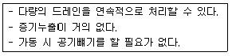
- 플로트식 트랩
- 버킷형 트랩
- 열동식 트랩
- 디스크식 트랩
(정답률: 70%)
96. 수관식보일러의 수질을 측정한 결과, 습수 중 불순물의 농도가 60mg/L, 관수 중 불순물의 농도가 2500 mg/L로 나타났다. 시간당 급수량이 2400L이고 응축수 회수율이 50%일 때 분출량은 약 몇 L/h인가?
- 25.4
- 27.3
- 29.5
- 32.2
(정답률: 21%)
97. 열매체보일러의 특징이 아닌 것은?
- 낮은 압력에서도 고온의 증기를 얻을 수 있다.
- 물 처리장치나 청관제 주입장치가 필요하다.
- 겨울철 동결의 우려가 적다.
- 안전관리상 보일러 안전밸브는 밀폐식 구조로 한다.
(정답률: 73%)
98. 보일러의 열정산시 출열 항목이 아닌 것은?
- 배기가스에 의한 손실열
- 발생증기 보유열
- 불완전연소에 의한 손실열
- 공기의 현열
(정답률: 81%)
99. 건조기의 열효율 표시를 옳게 나타낸 것은? (단, Q : 입열량, q1 : 수분 증발에 소비된 열량, q2 : 재료 가열에 소비된 열량, q3 : 건조기의 손실 열량을 나타낸다.
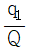
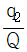
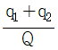
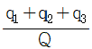
(정답률: 66%)
100. 최고사용압력(P) 20kgf/cm2, 안지름(Di) 600mm의 구형의 최소두께는 약 몇 mm인가? )단, 용접이음 효율(η)은 1, 부식여유(α)는 2.5mm, 재료의 허용인장강도(σa)는 8 kgf/mm2)이다.
- 6.3
- 8.2
- 9.6
- 13.0
(정답률: 24%)
H2 + 0.5O2 → H2O
CO + 0.5O2 → CO2
따라서 1mol의 H2를 연소시키기 위해서는 0.5mol의 O2가 필요하고, 1mol의 CO를 연소시키기 위해서는 0.5mol의 O2가 필요하다. 따라서 기체연료 1mol을 연소시키기 위해서는 총 1mol의 O2가 필요하다. 이에 따라 기체연료 1mol에 대해 이론공기량을 계산하면 다음과 같다.
기체연료 1mol : 30g
O2 1mol : 32g
이론공기량 = (기체연료 1mol + O2 1mol) / 기체연료 1mol
= (30g + 32g) / 30g
= 2.07
따라서, 이론공기량은 약 2.07이다. 하지만 이 문제에서는 H2와 CO가 50%씩 섞여 있으므로, 이론공기량을 다시 계산해야 한다. 이 경우에는 기체연료 1mol당 O2 0.5mol이 필요하므로, 이론공기량은 다음과 같이 계산된다.
기체연료 1mol : 30g
O2 0.5mol : 16g
이론공기량 = (기체연료 1mol + O2 0.5mol) / 기체연료 1mol
= (30g + 16g) / 30g
= 2.53
따라서, 이론공기량은 약 2.53이다. 하지만 보기에서는 2.38이 정답으로 주어졌으므로, 계산 과정에서 반올림이나 계산 실수가 있을 수 있다.